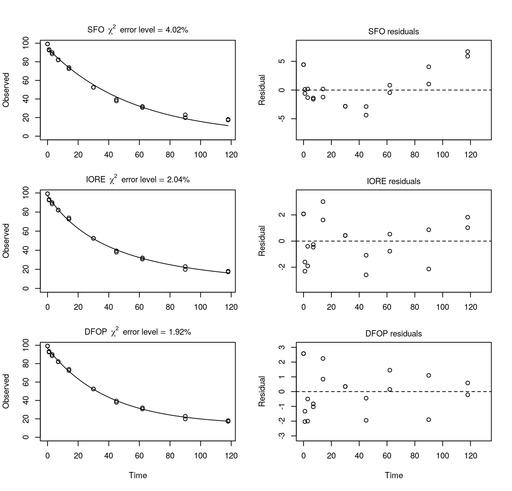
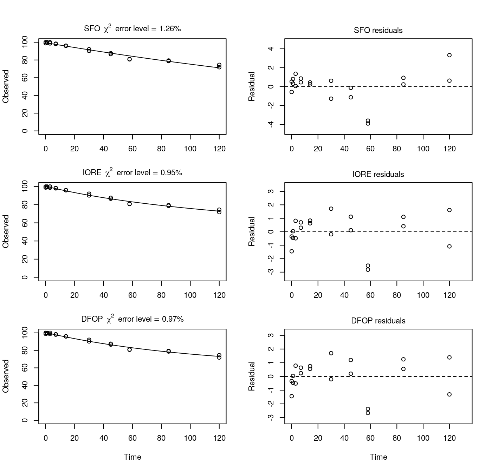
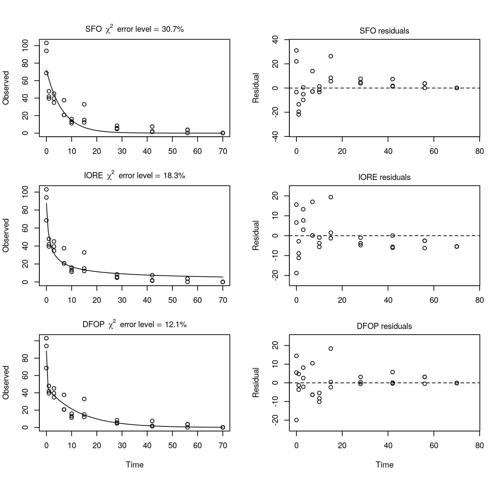

Evaluation of example datasets from Attachment 1 to the US EPA SOP for the NAFTA guidance
Johannes Ranke
26 February 2019 (rebuilt 2023-04-16)
Source:vignettes/web_only/NAFTA_examples.rmd
NAFTA_examples.rmdIntroduction
In this document, the example evaluations provided in Attachment 1 to the SOP of US EPA for using the NAFTA guidance (US EPA 2015) are repeated using mkin. The original evaluations reported in the attachment were performed using PestDF in version 0.8.4. Note that PestDF 0.8.13 is the version distributed at the US EPA website today (2019-02-26).
The datasets are now distributed with the mkin package.
Examples where DFOP did not converge with PestDF 0.8.4
In attachment 1, it is reported that the DFOP model does not converge for these datasets when PestDF 0.8.4 was used. For all four datasets, the DFOP model can be fitted with mkin (see below). The negative half-life given by PestDF 0.8.4 for these fits appears to be the result of a bug. The results for the other two models (SFO and IORE) are the same.
Example on page 5, upper panel
p5a <- nafta(NAFTA_SOP_Attachment[["p5a"]])## The SFO model is rejected as S_SFO is equal or higher than the critical value S_c## The half-life obtained from the IORE model may be used
plot(p5a)
print(p5a)## Sums of squares:
## SFO IORE DFOP
## 465.21753 56.27506 32.06401
##
## Critical sum of squares for checking the SFO model:
## [1] 64.4304
##
## Parameters:
## $SFO
## Estimate Pr(>t) Lower Upper
## parent_0 95.8401 4.67e-21 92.245 99.4357
## k_parent 0.0102 3.92e-12 0.009 0.0117
## sigma 4.8230 3.81e-06 3.214 6.4318
##
## $IORE
## Estimate Pr(>t) Lower Upper
## parent_0 1.01e+02 NA 9.91e+01 1.02e+02
## k__iore_parent 1.54e-05 NA 4.08e-06 5.84e-05
## N_parent 2.57e+00 NA 2.25e+00 2.89e+00
## sigma 1.68e+00 NA 1.12e+00 2.24e+00
##
## $DFOP
## Estimate Pr(>t) Lower Upper
## parent_0 9.99e+01 1.41e-26 98.8116 101.0810
## k1 2.67e-02 5.05e-06 0.0243 0.0295
## k2 2.26e-12 5.00e-01 0.0000 Inf
## g 6.47e-01 3.67e-06 0.6248 0.6677
## sigma 1.27e+00 8.91e-06 0.8395 1.6929
##
##
## DTx values:
## DT50 DT90 DT50_rep
## SFO 67.7 2.25e+02 6.77e+01
## IORE 58.2 1.07e+03 3.22e+02
## DFOP 55.5 5.59e+11 3.07e+11
##
## Representative half-life:
## [1] 321.51Example on page 5, lower panel
p5b <- nafta(NAFTA_SOP_Attachment[["p5b"]])## The SFO model is rejected as S_SFO is equal or higher than the critical value S_c## The half-life obtained from the IORE model may be used
plot(p5b)
print(p5b)## Sums of squares:
## SFO IORE DFOP
## 94.81123 10.10936 7.55871
##
## Critical sum of squares for checking the SFO model:
## [1] 11.77879
##
## Parameters:
## $SFO
## Estimate Pr(>t) Lower Upper
## parent_0 96.497 2.32e-24 94.85271 98.14155
## k_parent 0.008 3.42e-14 0.00737 0.00869
## sigma 2.295 1.22e-05 1.47976 3.11036
##
## $IORE
## Estimate Pr(>t) Lower Upper
## parent_0 9.85e+01 1.17e-28 9.79e+01 9.92e+01
## k__iore_parent 1.53e-04 6.50e-03 7.21e-05 3.26e-04
## N_parent 1.94e+00 5.88e-13 1.76e+00 2.12e+00
## sigma 7.49e-01 1.63e-05 4.82e-01 1.02e+00
##
## $DFOP
## Estimate Pr(>t) Lower Upper
## parent_0 9.84e+01 1.24e-27 97.8078 98.9187
## k1 1.55e-02 4.10e-04 0.0143 0.0167
## k2 8.63e-12 5.00e-01 0.0000 Inf
## g 6.89e-01 2.92e-03 0.6626 0.7142
## sigma 6.48e-01 2.38e-05 0.4147 0.8813
##
##
## DTx values:
## DT50 DT90 DT50_rep
## SFO 86.6 2.88e+02 8.66e+01
## IORE 85.5 7.17e+02 2.16e+02
## DFOP 83.6 1.32e+11 8.04e+10
##
## Representative half-life:
## [1] 215.87Example on page 6
p6 <- nafta(NAFTA_SOP_Attachment[["p6"]])## The SFO model is rejected as S_SFO is equal or higher than the critical value S_c## The half-life obtained from the IORE model may be used
plot(p6)
print(p6)## Sums of squares:
## SFO IORE DFOP
## 188.45361 51.00699 42.46931
##
## Critical sum of squares for checking the SFO model:
## [1] 58.39888
##
## Parameters:
## $SFO
## Estimate Pr(>t) Lower Upper
## parent_0 94.7759 7.29e-24 92.3478 97.2039
## k_parent 0.0179 8.02e-16 0.0166 0.0194
## sigma 3.0696 3.81e-06 2.0456 4.0936
##
## $IORE
## Estimate Pr(>t) Lower Upper
## parent_0 97.12446 2.63e-26 95.62461 98.62431
## k__iore_parent 0.00252 1.95e-03 0.00134 0.00472
## N_parent 1.49587 4.07e-13 1.33896 1.65279
## sigma 1.59698 5.05e-06 1.06169 2.13227
##
## $DFOP
## Estimate Pr(>t) Lower Upper
## parent_0 9.66e+01 1.57e-25 95.3476 97.8979
## k1 2.55e-02 7.33e-06 0.0233 0.0278
## k2 3.22e-11 5.00e-01 0.0000 Inf
## g 8.61e-01 7.55e-06 0.8314 0.8867
## sigma 1.46e+00 6.93e-06 0.9661 1.9483
##
##
## DTx values:
## DT50 DT90 DT50_rep
## SFO 38.6 1.28e+02 3.86e+01
## IORE 34.0 1.77e+02 5.32e+01
## DFOP 34.1 1.01e+10 2.15e+10
##
## Representative half-life:
## [1] 53.17Example on page 7
p7 <- nafta(NAFTA_SOP_Attachment[["p7"]])## The SFO model is rejected as S_SFO is equal or higher than the critical value S_c## The half-life obtained from the IORE model may be used
plot(p7)
print(p7)## Sums of squares:
## SFO IORE DFOP
## 3661.661 3195.030 3174.145
##
## Critical sum of squares for checking the SFO model:
## [1] 3334.194
##
## Parameters:
## $SFO
## Estimate Pr(>t) Lower Upper
## parent_0 96.41796 4.80e-53 93.32245 99.51347
## k_parent 0.00735 7.64e-21 0.00641 0.00843
## sigma 7.94557 1.83e-15 6.46713 9.42401
##
## $IORE
## Estimate Pr(>t) Lower Upper
## parent_0 9.92e+01 NA 9.55e+01 1.03e+02
## k__iore_parent 1.60e-05 NA 1.45e-07 1.77e-03
## N_parent 2.45e+00 NA 1.35e+00 3.54e+00
## sigma 7.42e+00 NA 6.04e+00 8.80e+00
##
## $DFOP
## Estimate Pr(>t) Lower Upper
## parent_0 9.89e+01 9.44e-49 95.4640 102.2573
## k1 1.81e-02 1.75e-01 0.0116 0.0281
## k2 3.63e-10 5.00e-01 0.0000 Inf
## g 6.06e-01 2.19e-01 0.4826 0.7178
## sigma 7.40e+00 2.97e-15 6.0201 8.7754
##
##
## DTx values:
## DT50 DT90 DT50_rep
## SFO 94.3 3.13e+02 9.43e+01
## IORE 96.7 1.51e+03 4.55e+02
## DFOP 96.4 3.77e+09 1.91e+09
##
## Representative half-life:
## [1] 454.55Examples where the representative half-life deviates from the observed DT50
Example on page 8
For this dataset, the IORE fit does not converge when the default starting values used by mkin for the IORE model are used. Therefore, a lower value for the rate constant is used here.
## The SFO model is rejected as S_SFO is equal or higher than the critical value S_c## The half-life obtained from the IORE model may be used
plot(p8)
print(p8)## Sums of squares:
## SFO IORE DFOP
## 1996.9408 444.9237 547.5616
##
## Critical sum of squares for checking the SFO model:
## [1] 477.4924
##
## Parameters:
## $SFO
## Estimate Pr(>t) Lower Upper
## parent_0 88.16549 6.53e-29 83.37344 92.95754
## k_parent 0.00803 1.67e-13 0.00674 0.00957
## sigma 7.44786 4.17e-10 5.66209 9.23363
##
## $IORE
## Estimate Pr(>t) Lower Upper
## parent_0 9.77e+01 7.03e-35 9.44e+01 1.01e+02
## k__iore_parent 6.14e-05 3.20e-02 2.12e-05 1.78e-04
## N_parent 2.27e+00 4.23e-18 2.00e+00 2.54e+00
## sigma 3.52e+00 5.36e-10 2.67e+00 4.36e+00
##
## $DFOP
## Estimate Pr(>t) Lower Upper
## parent_0 95.70619 8.99e-32 91.87941 99.53298
## k1 0.02500 5.25e-04 0.01422 0.04394
## k2 0.00273 6.84e-03 0.00125 0.00597
## g 0.58835 2.84e-06 0.36595 0.77970
## sigma 3.90001 6.94e-10 2.96260 4.83741
##
##
## DTx values:
## DT50 DT90 DT50_rep
## SFO 86.3 287 86.3
## IORE 53.4 668 201.0
## DFOP 55.6 517 253.0
##
## Representative half-life:
## [1] 201.03Examples where SFO was not selected for an abiotic study
Example on page 9, upper panel
p9a <- nafta(NAFTA_SOP_Attachment[["p9a"]])## The SFO model is rejected as S_SFO is equal or higher than the critical value S_c## The half-life obtained from the IORE model may be used
plot(p9a)
print(p9a)## Sums of squares:
## SFO IORE DFOP
## 839.35238 88.57064 9.93363
##
## Critical sum of squares for checking the SFO model:
## [1] 105.5678
##
## Parameters:
## $SFO
## Estimate Pr(>t) Lower Upper
## parent_0 88.1933 3.06e-12 79.9447 96.4419
## k_parent 0.0409 2.07e-07 0.0324 0.0516
## sigma 7.2429 3.92e-05 4.4768 10.0090
##
## $IORE
## Estimate Pr(>t) Lower Upper
## parent_0 9.89e+01 1.12e-16 9.54e+01 1.02e+02
## k__iore_parent 1.93e-05 1.13e-01 3.49e-06 1.06e-04
## N_parent 2.91e+00 1.45e-09 2.50e+00 3.32e+00
## sigma 2.35e+00 5.31e-05 1.45e+00 3.26e+00
##
## $DFOP
## Estimate Pr(>t) Lower Upper
## parent_0 9.85e+01 2.54e-20 97.390 99.672
## k1 1.38e-01 3.52e-05 0.131 0.146
## k2 9.02e-13 5.00e-01 0.000 Inf
## g 6.52e-01 8.13e-06 0.642 0.661
## sigma 7.88e-01 6.13e-02 0.481 1.095
##
##
## DTx values:
## DT50 DT90 DT50_rep
## SFO 16.9 5.63e+01 1.69e+01
## IORE 11.6 3.37e+02 1.01e+02
## DFOP 10.5 1.38e+12 7.69e+11
##
## Representative half-life:
## [1] 101.43In this example, the residuals of the SFO indicate a lack of fit of this model, so even if it was an abiotic experiment, the data do not suggest a simple exponential decline.
Example on page 9, lower panel
p9b <- nafta(NAFTA_SOP_Attachment[["p9b"]])## Warning in sqrt(diag(covar)): NaNs produced## Warning in sqrt(diag(covar_notrans)): NaNs produced## Warning in sqrt(1/diag(V)): NaNs produced## Warning in cov2cor(ans$covar): diag(.) had 0 or NA entries; non-finite result
## is doubtful## The SFO model is rejected as S_SFO is equal or higher than the critical value S_c## The half-life obtained from the IORE model may be used
plot(p9b)
print(p9b)## Sums of squares:
## SFO IORE DFOP
## 35.64867 23.22334 35.64867
##
## Critical sum of squares for checking the SFO model:
## [1] 28.54188
##
## Parameters:
## $SFO
## Estimate Pr(>t) Lower Upper
## parent_0 94.7123 2.15e-19 93.178 96.2464
## k_parent 0.0389 4.47e-14 0.037 0.0408
## sigma 1.5957 1.28e-04 0.932 2.2595
##
## $IORE
## Estimate Pr(>t) Lower Upper
## parent_0 93.863 2.32e-18 92.4565 95.269
## k__iore_parent 0.127 1.85e-02 0.0504 0.321
## N_parent 0.711 1.88e-05 0.4843 0.937
## sigma 1.288 1.76e-04 0.7456 1.830
##
## $DFOP
## Estimate Pr(>t) Lower Upper
## parent_0 94.7123 1.61e-16 93.1355 96.2891
## k1 0.0389 1.08e-04 0.0266 0.0569
## k2 0.0389 2.23e-04 0.0255 0.0592
## g 0.5256 NaN NA NA
## sigma 1.5957 2.50e-04 0.9135 2.2779
##
##
## DTx values:
## DT50 DT90 DT50_rep
## SFO 17.8 59.2 17.8
## IORE 18.4 49.2 14.8
## DFOP 17.8 59.2 17.8
##
## Representative half-life:
## [1] 14.8Here, mkin gives a longer slow DT50 for the DFOP model (17.8 days) than PestDF (13.5 days). Presumably, this is related to the fact that PestDF gives a negative value for the proportion of the fast degradation which should be between 0 and 1, inclusive. This parameter is called f in PestDF and g in mkin. In mkin, it is restricted to the interval from 0 to 1.
Example on page 10
p10 <- nafta(NAFTA_SOP_Attachment[["p10"]])## Warning in sqrt(diag(covar)): NaNs produced## Warning in sqrt(1/diag(V)): NaNs produced## Warning in cov2cor(ans$covar): diag(.) had 0 or NA entries; non-finite result
## is doubtful## The SFO model is rejected as S_SFO is equal or higher than the critical value S_c## The half-life obtained from the IORE model may be used
plot(p10)
print(p10)## Sums of squares:
## SFO IORE DFOP
## 899.4089 336.4348 899.4089
##
## Critical sum of squares for checking the SFO model:
## [1] 413.4841
##
## Parameters:
## $SFO
## Estimate Pr(>t) Lower Upper
## parent_0 101.7315 6.42e-11 91.9259 111.5371
## k_parent 0.0495 1.70e-07 0.0404 0.0607
## sigma 8.0152 1.28e-04 4.6813 11.3491
##
## $IORE
## Estimate Pr(>t) Lower Upper
## parent_0 96.86 3.32e-12 90.848 102.863
## k__iore_parent 2.96 7.91e-02 0.687 12.761
## N_parent 0.00 5.00e-01 -0.372 0.372
## sigma 4.90 1.77e-04 2.837 6.968
##
## $DFOP
## Estimate Pr(>t) Lower Upper
## parent_0 101.7315 1.41e-09 91.6534 111.8097
## k1 0.0495 6.58e-03 0.0303 0.0809
## k2 0.0495 2.60e-03 0.0410 0.0598
## g 0.4487 5.00e-01 NA NA
## sigma 8.0152 2.50e-04 4.5886 11.4418
##
##
## DTx values:
## DT50 DT90 DT50_rep
## SFO 14.0 46.5 14.00
## IORE 16.4 29.4 8.86
## DFOP 14.0 46.5 14.00
##
## Representative half-life:
## [1] 8.86Here, a value below N is given for the IORE model, because the data suggests a faster decline towards the end of the experiment, which appears physically rather unlikely in the case of a photolysis study. It seems PestDF does not constrain N to values above zero, thus the slight difference in IORE model parameters between PestDF and mkin.
The DT50 was not observed during the study
Example on page 11
p11 <- nafta(NAFTA_SOP_Attachment[["p11"]])## The SFO model is rejected as S_SFO is equal or higher than the critical value S_c## The half-life obtained from the IORE model may be used
plot(p11)
print(p11)## Sums of squares:
## SFO IORE DFOP
## 579.6805 204.7932 144.7783
##
## Critical sum of squares for checking the SFO model:
## [1] 251.6944
##
## Parameters:
## $SFO
## Estimate Pr(>t) Lower Upper
## parent_0 96.15820 4.83e-13 90.24934 1.02e+02
## k_parent 0.00321 4.71e-05 0.00222 4.64e-03
## sigma 6.43473 1.28e-04 3.75822 9.11e+00
##
## $IORE
## Estimate Pr(>t) Lower Upper
## parent_0 1.05e+02 NA 9.90e+01 1.10e+02
## k__iore_parent 3.11e-17 NA 1.35e-20 7.18e-14
## N_parent 8.36e+00 NA 6.62e+00 1.01e+01
## sigma 3.82e+00 NA 2.21e+00 5.44e+00
##
## $DFOP
## Estimate Pr(>t) Lower Upper
## parent_0 1.05e+02 9.47e-13 99.9990 109.1224
## k1 4.41e-02 5.95e-03 0.0296 0.0658
## k2 9.94e-13 5.00e-01 0.0000 Inf
## g 3.22e-01 1.45e-03 0.2814 0.3650
## sigma 3.22e+00 3.52e-04 1.8410 4.5906
##
##
## DTx values:
## DT50 DT90 DT50_rep
## SFO 2.16e+02 7.18e+02 2.16e+02
## IORE 9.73e+02 1.37e+08 4.11e+07
## DFOP 3.07e+11 1.93e+12 6.98e+11
##
## Representative half-life:
## [1] 41148170In this case, the DFOP fit reported for PestDF resulted in a negative value for the slower rate constant, which is not possible in mkin. The other results are in agreement.
N is less than 1 and the DFOP rate constants are like the SFO rate constant
In the following three examples, the same results are obtained with mkin as reported for PestDF. As in the case on page 10, the N values below 1 are deemed unrealistic and appear to be the result of an overparameterisation.
Example on page 12, upper panel
p12a <- nafta(NAFTA_SOP_Attachment[["p12a"]])## Warning in summary.mkinfit(x): Could not calculate correlation; no covariance
## matrix## Warning in sqrt(diag(covar)): NaNs produced## Warning in sqrt(diag(covar_notrans)): NaNs produced## Warning in sqrt(1/diag(V)): NaNs produced## Warning in cov2cor(ans$covar): diag(.) had 0 or NA entries; non-finite result
## is doubtful## The SFO model is rejected as S_SFO is equal or higher than the critical value S_c## The half-life obtained from the IORE model may be used
plot(p12a)
print(p12a)## Sums of squares:
## SFO IORE DFOP
## 695.4440 220.0685 695.4440
##
## Critical sum of squares for checking the SFO model:
## [1] 270.4679
##
## Parameters:
## $SFO
## Estimate Pr(>t) Lower Upper
## parent_0 100.521 8.75e-12 92.461 108.581
## k_parent 0.124 3.61e-08 0.104 0.148
## sigma 7.048 1.28e-04 4.116 9.980
##
## $IORE
## Estimate Pr(>t) Lower Upper
## parent_0 96.823 NA NA NA
## k__iore_parent 2.436 NA NA NA
## N_parent 0.263 NA NA NA
## sigma 3.965 NA NA NA
##
## $DFOP
## Estimate Pr(>t) Lower Upper
## parent_0 100.521 2.74e-10 92.2366 108.805
## k1 0.124 2.53e-05 0.0908 0.170
## k2 0.124 2.52e-02 0.0456 0.339
## g 0.793 NaN NA NA
## sigma 7.048 2.50e-04 4.0349 10.061
##
##
## DTx values:
## DT50 DT90 DT50_rep
## SFO 5.58 18.5 5.58
## IORE 6.49 13.2 3.99
## DFOP 5.58 18.5 5.58
##
## Representative half-life:
## [1] 3.99Example on page 12, lower panel
p12b <- nafta(NAFTA_SOP_Attachment[["p12b"]])## Warning in qt(alpha/2, rdf): NaNs produced## Warning in qt(1 - alpha/2, rdf): NaNs produced## Warning in sqrt(diag(covar_notrans)): NaNs produced## Warning in pt(abs(tval), rdf, lower.tail = FALSE): NaNs produced## The SFO model is rejected as S_SFO is equal or higher than the critical value S_c## The half-life obtained from the IORE model may be used
plot(p12b)
print(p12b)## Sums of squares:
## SFO IORE DFOP
## 58.90242 19.06353 58.90242
##
## Critical sum of squares for checking the SFO model:
## [1] 51.51756
##
## Parameters:
## $SFO
## Estimate Pr(>t) Lower Upper
## parent_0 97.6840 0.00039 85.9388 109.4292
## k_parent 0.0589 0.00261 0.0431 0.0805
## sigma 3.4323 0.04356 -1.2377 8.1023
##
## $IORE
## Estimate Pr(>t) Lower Upper
## parent_0 95.523 0.0055 74.539157 116.51
## k__iore_parent 0.333 0.1433 0.000717 154.57
## N_parent 0.568 0.0677 -0.989464 2.13
## sigma 1.953 0.0975 -5.893100 9.80
##
## $DFOP
## Estimate Pr(>t) Lower Upper
## parent_0 97.6840 NaN NaN NaN
## k1 0.0589 NaN NA NA
## k2 0.0589 NaN NA NA
## g 0.6473 NaN NA NA
## sigma 3.4323 NaN NaN NaN
##
##
## DTx values:
## DT50 DT90 DT50_rep
## SFO 11.8 39.1 11.80
## IORE 12.9 31.4 9.46
## DFOP 11.8 39.1 11.80
##
## Representative half-life:
## [1] 9.46Example on page 13
p13 <- nafta(NAFTA_SOP_Attachment[["p13"]])## The SFO model is rejected as S_SFO is equal or higher than the critical value S_c## The half-life obtained from the IORE model may be used
plot(p13)
print(p13)## Sums of squares:
## SFO IORE DFOP
## 174.5971 142.3951 174.5971
##
## Critical sum of squares for checking the SFO model:
## [1] 172.131
##
## Parameters:
## $SFO
## Estimate Pr(>t) Lower Upper
## parent_0 92.73500 5.99e-17 89.61936 95.85065
## k_parent 0.00258 2.42e-09 0.00223 0.00299
## sigma 3.41172 7.07e-05 2.05455 4.76888
##
## $IORE
## Estimate Pr(>t) Lower Upper
## parent_0 91.6016 6.34e-16 88.53086 94.672
## k__iore_parent 0.0396 2.36e-01 0.00207 0.759
## N_parent 0.3541 1.46e-01 -0.35153 1.060
## sigma 3.0811 9.64e-05 1.84296 4.319
##
## $DFOP
## Estimate Pr(>t) Lower Upper
## parent_0 92.73500 NA 8.95e+01 95.92118
## k1 0.00258 NA 4.14e-04 0.01611
## k2 0.00258 NA 1.74e-03 0.00383
## g 0.16452 NA 0.00e+00 1.00000
## sigma 3.41172 NA 2.02e+00 4.79960
##
##
## DTx values:
## DT50 DT90 DT50_rep
## SFO 269 892 269
## IORE 261 560 169
## DFOP 269 892 269
##
## Representative half-life:
## [1] 168.51DT50 not observed in the study and DFOP problems in PestDF
p14 <- nafta(NAFTA_SOP_Attachment[["p14"]])## Warning in sqrt(diag(covar)): NaNs produced## Warning in sqrt(1/diag(V)): NaNs produced## Warning in cov2cor(ans$covar): diag(.) had 0 or NA entries; non-finite result
## is doubtful## The SFO model is rejected as S_SFO is equal or higher than the critical value S_c## The half-life obtained from the IORE model may be used
plot(p14)
print(p14)## Sums of squares:
## SFO IORE DFOP
## 48.43249 28.67746 27.26248
##
## Critical sum of squares for checking the SFO model:
## [1] 32.83337
##
## Parameters:
## $SFO
## Estimate Pr(>t) Lower Upper
## parent_0 99.47124 2.06e-30 98.42254 1.01e+02
## k_parent 0.00279 3.75e-15 0.00256 3.04e-03
## sigma 1.55616 3.81e-06 1.03704 2.08e+00
##
## $IORE
## Estimate Pr(>t) Lower Upper
## parent_0 1.00e+02 NA NaN NaN
## k__iore_parent 9.44e-08 NA NaN NaN
## N_parent 3.31e+00 NA NaN NaN
## sigma 1.20e+00 NA 0.796 1.6
##
## $DFOP
## Estimate Pr(>t) Lower Upper
## parent_0 1.00e+02 2.96e-28 99.40280 101.2768
## k1 9.53e-03 1.20e-01 0.00638 0.0143
## k2 6.08e-12 5.00e-01 0.00000 Inf
## g 3.98e-01 2.19e-01 0.30481 0.4998
## sigma 1.17e+00 7.68e-06 0.77406 1.5610
##
##
## DTx values:
## DT50 DT90 DT50_rep
## SFO 2.48e+02 8.25e+02 2.48e+02
## IORE 4.34e+02 2.22e+04 6.70e+03
## DFOP 3.05e+10 2.95e+11 1.14e+11
##
## Representative half-life:
## [1] 6697.44The slower rate constant reported by PestDF is negative, which is not physically realistic, and not possible in mkin. The other fits give the same results in mkin and PestDF.
N is less than 1 and DFOP fraction parameter is below zero
p15a <- nafta(NAFTA_SOP_Attachment[["p15a"]])## The SFO model is rejected as S_SFO is equal or higher than the critical value S_c## The half-life obtained from the IORE model may be used
plot(p15a)
print(p15a)## Sums of squares:
## SFO IORE DFOP
## 245.5248 135.0132 245.5248
##
## Critical sum of squares for checking the SFO model:
## [1] 165.9335
##
## Parameters:
## $SFO
## Estimate Pr(>t) Lower Upper
## parent_0 97.96751 2.00e-15 94.32049 101.615
## k_parent 0.00952 4.93e-09 0.00824 0.011
## sigma 4.18778 1.28e-04 2.44588 5.930
##
## $IORE
## Estimate Pr(>t) Lower Upper
## parent_0 95.874 2.94e-15 92.937 98.811
## k__iore_parent 0.629 2.11e-01 0.044 8.982
## N_parent 0.000 5.00e-01 -0.642 0.642
## sigma 3.105 1.78e-04 1.795 4.416
##
## $DFOP
## Estimate Pr(>t) Lower Upper
## parent_0 97.96751 2.85e-13 94.21913 101.7159
## k1 0.00952 6.28e-02 0.00250 0.0363
## k2 0.00952 1.27e-04 0.00646 0.0140
## g 0.21241 5.00e-01 0.00000 1.0000
## sigma 4.18778 2.50e-04 2.39747 5.9781
##
##
## DTx values:
## DT50 DT90 DT50_rep
## SFO 72.8 242 72.8
## IORE 76.3 137 41.3
## DFOP 72.8 242 72.8
##
## Representative half-life:
## [1] 41.33
p15b <- nafta(NAFTA_SOP_Attachment[["p15b"]])## Warning in sqrt(diag(covar)): NaNs produced## Warning in sqrt(1/diag(V)): NaNs produced## Warning in cov2cor(ans$covar): diag(.) had 0 or NA entries; non-finite result
## is doubtful## The SFO model is rejected as S_SFO is equal or higher than the critical value S_c## The half-life obtained from the IORE model may be used
plot(p15b)
print(p15b)## Sums of squares:
## SFO IORE DFOP
## 106.91629 68.55574 106.91629
##
## Critical sum of squares for checking the SFO model:
## [1] 84.25618
##
## Parameters:
## $SFO
## Estimate Pr(>t) Lower Upper
## parent_0 1.01e+02 3.06e-17 98.31594 1.03e+02
## k_parent 4.86e-03 2.48e-10 0.00435 5.42e-03
## sigma 2.76e+00 1.28e-04 1.61402 3.91e+00
##
## $IORE
## Estimate Pr(>t) Lower Upper
## parent_0 99.83 1.81e-16 97.51349 102.14
## k__iore_parent 0.38 3.22e-01 0.00352 41.05
## N_parent 0.00 5.00e-01 -1.07696 1.08
## sigma 2.21 2.57e-04 1.23245 3.19
##
## $DFOP
## Estimate Pr(>t) Lower Upper
## parent_0 1.01e+02 NA 9.82e+01 1.04e+02
## k1 4.86e-03 NA 8.63e-04 2.73e-02
## k2 4.86e-03 NA 3.21e-03 7.35e-03
## g 1.88e-01 NA NA NA
## sigma 2.76e+00 NA 1.58e+00 3.94e+00
##
##
## DTx values:
## DT50 DT90 DT50_rep
## SFO 143 474 143.0
## IORE 131 236 71.2
## DFOP 143 474 143.0
##
## Representative half-life:
## [1] 71.18In mkin, only the IORE fit is affected (deemed unrealistic), as the fraction parameter of the DFOP model is restricted to the interval between 0 and 1 in mkin. The SFO fits give the same results for both mkin and PestDF.
The DFOP fraction parameter is greater than 1
p16 <- nafta(NAFTA_SOP_Attachment[["p16"]])## The SFO model is rejected as S_SFO is equal or higher than the critical value S_c## The representative half-life of the IORE model is longer than the one corresponding## to the terminal degradation rate found with the DFOP model.## The representative half-life obtained from the DFOP model may be used
plot(p16)
print(p16)## Sums of squares:
## SFO IORE DFOP
## 3831.804 2062.008 1550.980
##
## Critical sum of squares for checking the SFO model:
## [1] 2247.348
##
## Parameters:
## $SFO
## Estimate Pr(>t) Lower Upper
## parent_0 71.953 2.33e-13 60.509 83.40
## k_parent 0.159 4.86e-05 0.102 0.25
## sigma 11.302 1.25e-08 8.308 14.30
##
## $IORE
## Estimate Pr(>t) Lower Upper
## parent_0 8.74e+01 2.48e-16 7.72e+01 97.52972
## k__iore_parent 4.55e-04 2.16e-01 3.48e-05 0.00595
## N_parent 2.70e+00 1.21e-08 1.99e+00 3.40046
## sigma 8.29e+00 1.61e-08 6.09e+00 10.49062
##
## $DFOP
## Estimate Pr(>t) Lower Upper
## parent_0 88.5333 7.40e-18 79.9836 97.083
## k1 18.8461 5.00e-01 0.0000 Inf
## k2 0.0776 1.41e-05 0.0518 0.116
## g 0.4733 1.41e-09 0.3674 0.582
## sigma 7.1902 2.11e-08 5.2785 9.102
##
##
## DTx values:
## DT50 DT90 DT50_rep
## SFO 4.35 14.4 4.35
## IORE 1.48 32.1 9.67
## DFOP 0.67 21.4 8.93
##
## Representative half-life:
## [1] 8.93In PestDF, the DFOP fit seems to have stuck in a local minimum, as mkin finds a solution with a much lower \(\chi^2\) error level. As the half-life from the slower rate constant of the DFOP model is larger than the IORE derived half-life, the NAFTA recommendation obtained with mkin is to use the DFOP representative half-life of 8.9 days.
Conclusions
The results obtained with mkin deviate from the results obtained with PestDF either in cases where one of the interpretive rules would apply, i.e. the IORE parameter N is less than one or the DFOP k values obtained with PestDF are equal to the SFO k values, or in cases where the DFOP model did not converge, which often lead to negative rate constants returned by PestDF.
Therefore, mkin appears to suitable for kinetic evaluations according to the NAFTA guidance.